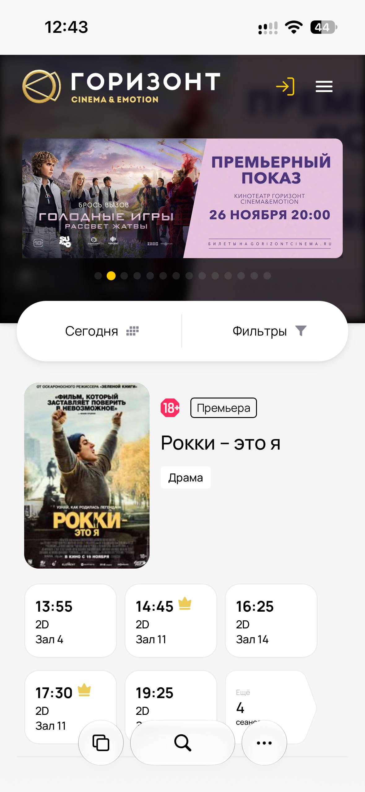
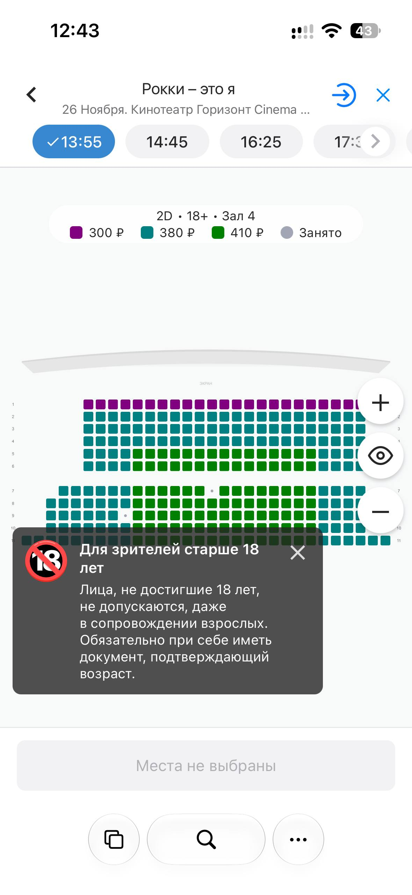
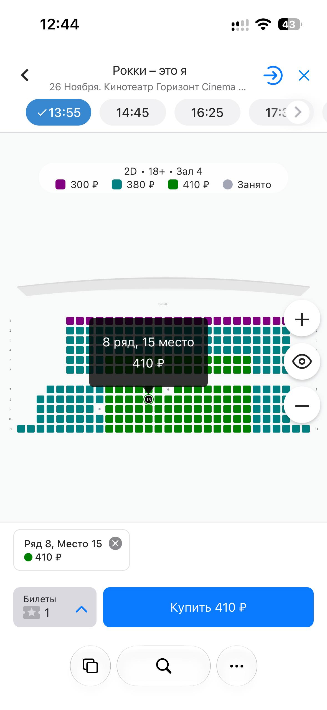
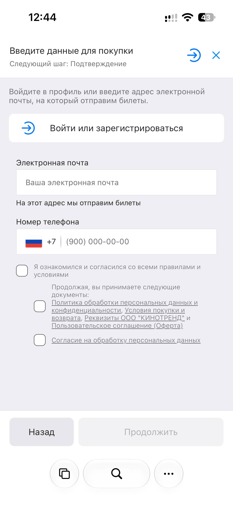
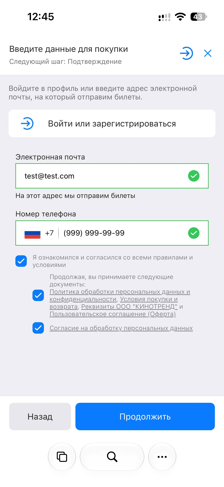
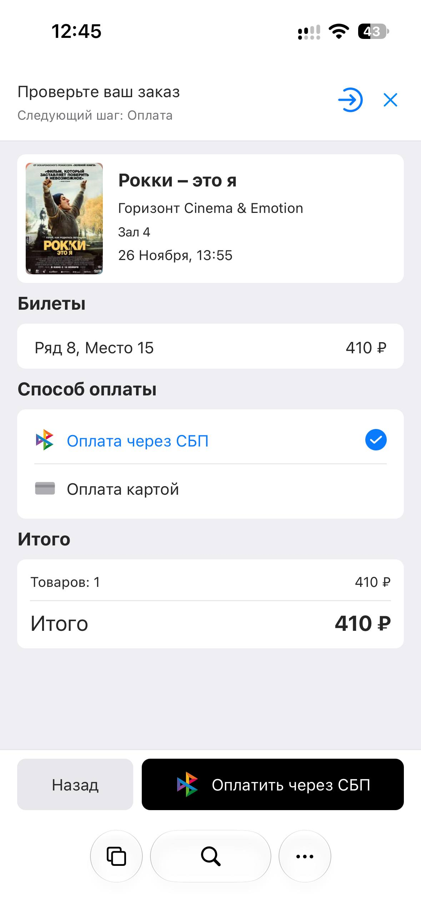
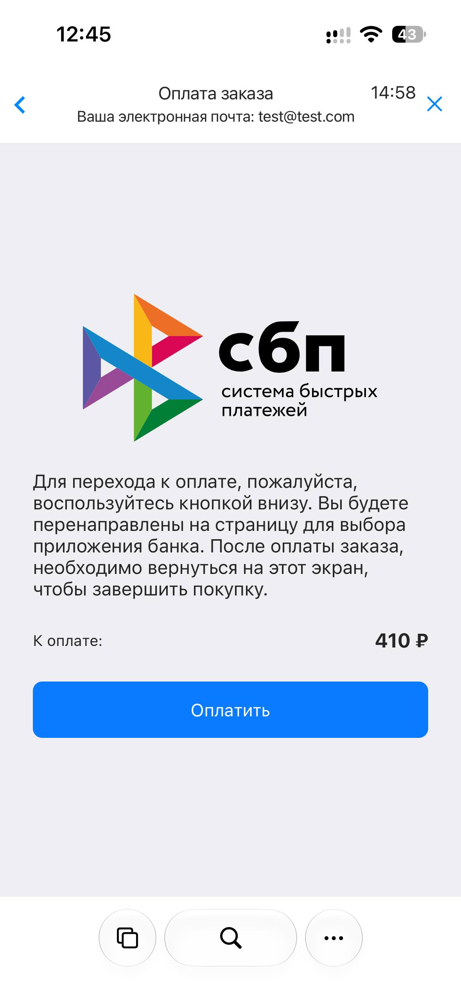

Провести UX-аудит мобильного виджета продажи билетов в кино и предложить редизайн, чтобы упростить покупку и снизить риск ухода до оплаты.
Рамки разбора
1
Я сфокусировался на приоритетном сценарии — покупке с телефона. Проверил и переработал публично доступные шаги до оплаты.
2
Выделил самые важные изменения. Это самостоятельный концепт без опоры на дизайн-систему Киноплана, который показывает мой подход и один возможный результат.
3
У меня нет продуктовой аналитики и данных о поведении зрителей, поэтому оценка экспертная. Рост конверсии нужно проверять на данных.
4
У меня нет отраслевой экспертизы. Причины отдельных решений и технические ограничения кинотеатров нужно уточнять.
Аудит экранов
1Выбор сеанса

123
1Непонятно, что за коронкиНа сайте у короны нет подписи. В расписании самого виджета есть подпись «ВИП»
2Кнопки сеансов возможно мелковатыМожно попробовать по два сеанса в строку, на маленьких экранах будет легче по ним попасть
3«Все сеансы» вместо «Еще 4 сеанса»?Вокруг уже много времени и номеров залов. Число скрытых сеансов в момент выбора мало что дает
2Навигация и схема зала

1234
1«Назад» и «Закрыть» трудно различитьВ шапке много разных стрелок. «Назад» открывает расписание внутри виджета, хотя зритель пришел из расписания на сайте, то есть это не возврат
2Баннер 18+ занимает треть экранаЕсли требования позволяют, показать 18+ маленьким чипом среди данных о сеансе. Если нужно подтверждение возраста, добавить чекбокс в подходящий момент
3Неочевидная иконка входаОна выглядит как еще одна кнопка навигации, и непонятно, зачем входить в аккаунт сейчас
4Глаз открывает фото залаИконка стоит между «+» и «−», поэтому легко принять ее за управление схемой. Стоит вынести отдельно и подписать
3Выбор кресел

1234
1Зал слишком мелкийРяды почти не видны. На маленьком экране сложно попасть в нужное кресло
2Выбранные билеты спрятаны в спойлереХотя это главное, что нужно видеть после выбора. Визуально иерархия слабая, много похожих друг на друга кнопок и подписей
3ПодсказкаРяд, место и цена набраны одинаково, а сам тултип закрывает другие кресла. Может перенести детали вниз, в список выбранных мест?
4Формулировка оплаты«Купить 410 ₽» звучит как оплата, хотя это еще бронирование. И формулировку можно улучшить
4Контакты и согласия

12
До заполнения

34
После заполнения
1Непонятно, куда я попалНа экране сразу много текста и действий. Стоит все почистить, сократить заголовок и оставить простую форму
2Три чекбокса и длинные подписиЕсли требования позволяют, оставить один чекбокс и две короткие формулировки со ссылками на документы
3Убрать кнопку «Войти или зарегистрироваться»Если логика продукта позволяет, связать поля с аккаунтом: существующий пользователь входит, новый — регистрируется
4Согласовать элементыПривести к одному стилю, согласовать отступы, подписи и состояния. Если телефон обязателен, коротко объяснить, зачем он нужен
5Проверка заказа

1234
1Показать, куда придет билетВ сводке уже есть фильм, время и зал. Здесь же было бы удобно сверить почту перед оплатой
2Дать изменить билеты прямо здесьДобавить «Изменить» рядом с билетами, чтобы не проходить весь путь через «Назад». После правки вернуть на проверку заказа
3Зачем снова кнопка входа?Зритель только что прошел этап оформления и ввел контакты
4После «Оплатить через СБП» еще один экранЕсли интеграция позволяет, открыть выбор банка сразу. В сводке оставить один заметный итог
6Переход в банк

123
1Сократить инструкциюГлавное вынести в заголовок «Выберите банк для оплаты». Ниже оставить короткую подсказку о возврате после платежа
2Подсветить оставшееся времяТаймер теряется в шапке. Показать его заметнее и пояснить, что произойдет, когда время закончится
3«Выбрать банк» вместо «Оплатить»Если отдельный экран нужен, назвать кнопку по ее действию
Что показал аудит
Флоу покупки билета должен быть рассчитан на скорость и удобство — чтобы пользователь проходил его в кратчайшие сроки с минимальным трением. Я не заметил в этом сценарии лишних обязательных шагов или критических ошибок, но его можно сделать быстрее, чище и удобнее.
Я бы начал с более читаемого расписания и схемы зала, упростил навигацию и форму получателя, и в целом почистил бы интерфейс, поработав с иерархией элементов и действий.
Предложенное решение
Прототип интерактивный — кликайте прямо на нужные элементы внутри